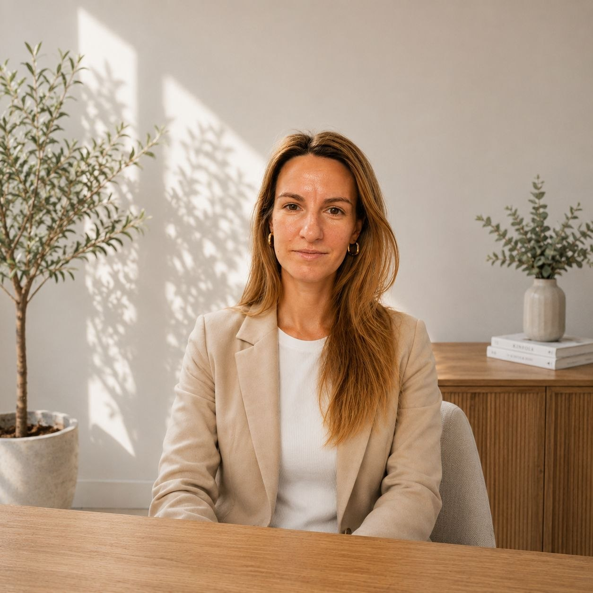

Hi, I'm Eva Kos-Sivirin
Senior Quality Control Engineer (7+ Years Experience) | Quality Advocate
I specialize in finding edge cases before users do, building reliable test strategies, and making software better—one bug at a time.
About Me
With over 7 years of hands-on experience in Quality Assurance and Control, I have helped tech teams deliver polished, user-friendly, and stable digital products. My experience spans web and mobile application testing, API validation, regression testing, and creating comprehensive test documentation.
To me, testing isn't just about breaking things—it's about understanding how users interact with technology and ensuring that every release meets high quality standards. I bridge the gap between developers, product managers, and end-users.
My Approach to Quality
- Proactive, Not Reactive: I believe in early testing involvement (Shift-Left approach) to catch flaws during the planning and design phases.
- Empathy for the User: Software should not only function according to specs, but feel intuitive and seamless in real-world scenarios.
- Clear & Constructive Communication: A great bug report saves hours. I focus on detailed steps, logs, and collaborative communication with dev teams.
Skills & Technical Toolkit
Testing Expertise
- Functional, Regression, & Integration Testing
- API Testing (Postman / Swagger)
- Mobile App Testing (iOS & Android)
- Cross-Browser & Usability Testing
- Test Case Design & Requirements Analysis
Tools & Workflow
- Issue Tracking: Jira, Trello, TestRail
- API & Web Tools: Postman, Charles Proxy, Chrome DevTools, Jmeter
- Methodologies: Agile / Scrum, Kanban
- Automation Exposure: Cypress + JS, custom-built Java API clients
Current Chapter: Full-Time Mom & Continuous Learner
I am currently on maternity leave, devoting time to my family and raising my child. Managing family life has actually strengthened my core QA skills—patience, multi-tasking, high attention to detail, and rapid problem-solving are daily practices!
During this phase, I am keeping my technical knowledge fresh by staying updated on QA industry trends, exploring new testing tools, and connecting with tech peers.
I am open to future opportunities, advice sharing, or light consulting discussions as I prepare for my eventual return to the tech world.
Life Outside of Tech
When I’m not testing software or spending time with my child, I enjoy:
- Reading books
- Watching movies or TV shows
- Dancing
Get In Touch
Whether you want to discuss software quality, exchange QA insights, or just say hello, feel free to reach out!
Email: forevaks@gmail.com
Location: Dnipro, Ukraine